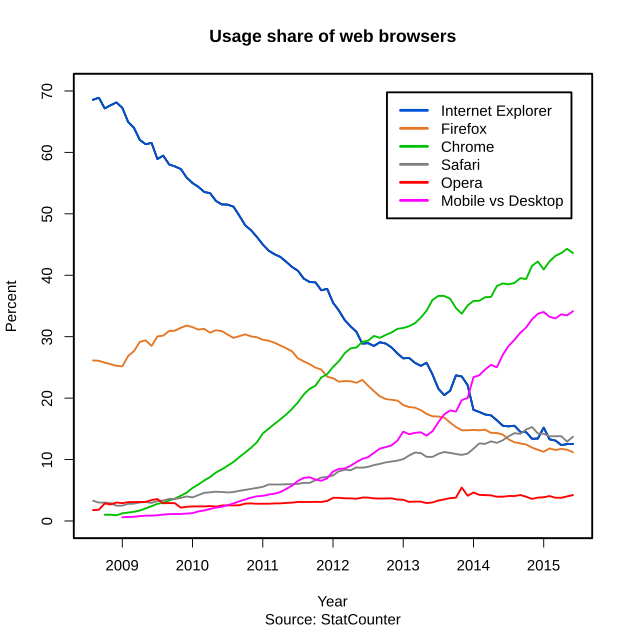
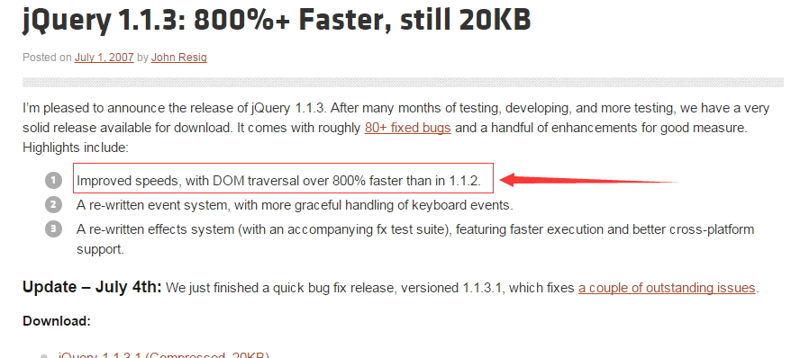

javascript及其框架入门
Xu Xiaomeng
Baozou Technology
首先，我们来消除几个误区，以下是真理，请记住：
console.log(javascript == Java || a language similar to Java || closely related to Java)
// false
console.log(javascript == jQuery)
// false
console.log(typeof jQuery == 'javascript framework')
// true
console.log(jQuery === javascriptFramework)
// false
JavaScript 发布
Netscape 2.0
ES标准提交
Microsoft发布IE3
及JScript
ES 1.0标准发布
ES 3.0标准发布
Firefox 1.0发布
Dojo立项
Ajax概念提出
prototype 1.0发布
prototype王朝
jQuery 1.0发布
Chrome 1.0发布
搭载V8引擎
jQuery 1.1.3发布
jQuery纪元


ES 5.0标准发布
Node.js发布
jQuery 1.3发布
jQuery一统天下